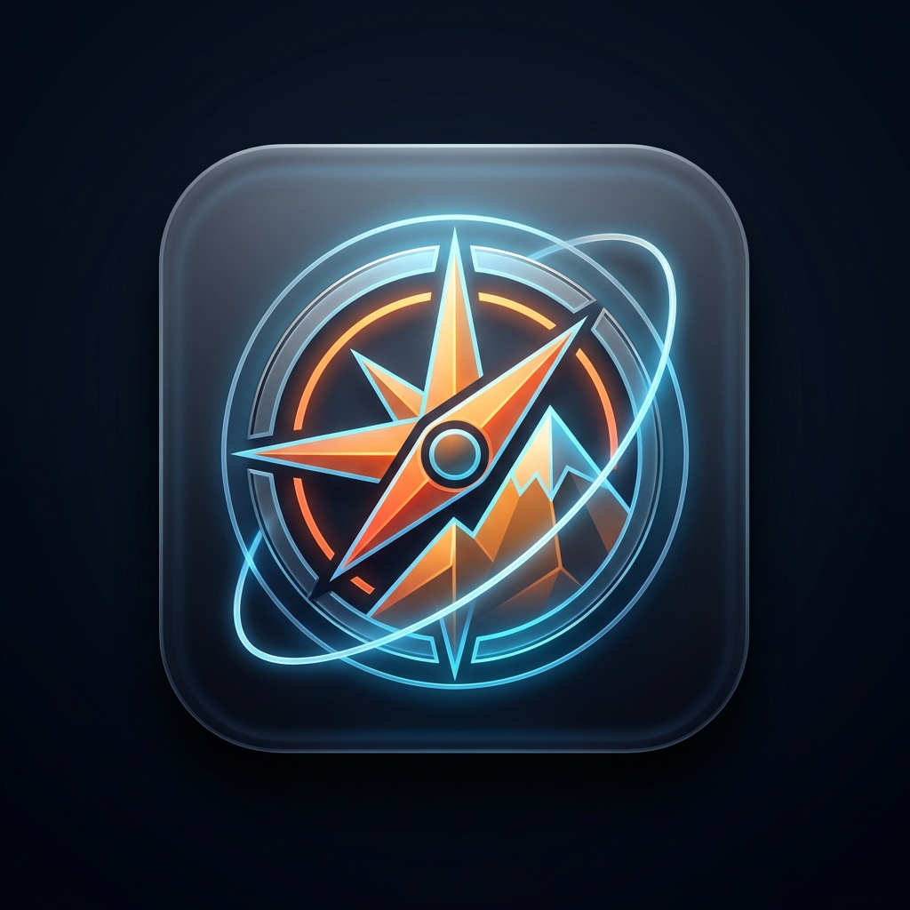
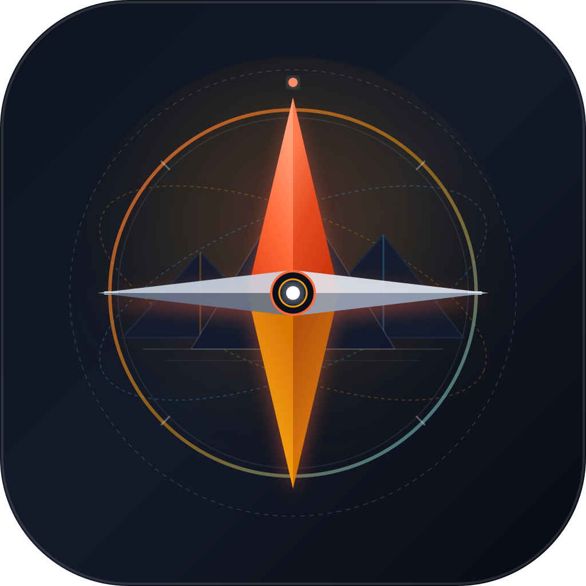
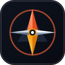

Projetado para telas OLED Retina, iOS App Store e Google Play. Simboliza a bússola de orientação, picos de montanhas remotas e rotas de exploração offline.

Render ultra-detalhado com iluminação volumétrica, agulha em ouro âmbar e montanha facetada.

Escalabilidade geométrica pura, gradientes modernos e borda interna chanfrada.

32pxLegível desde favicons de 16px até banners gigantes da App Store de 1024px.